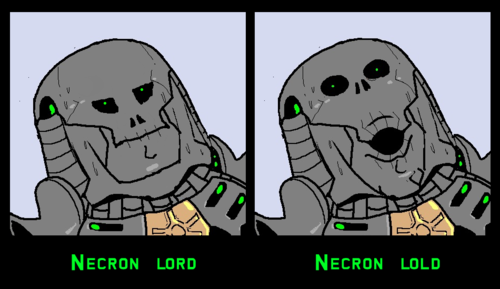
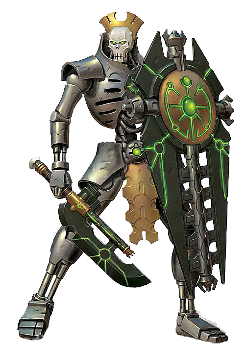

Necrons
The Necrons are a mysterious race of robotic skeletal warriors that have lain dormant in their stasis-tombs for more than 60 million Terran years and who are the soulless creations and former servants of the ancient C'tan, the terrible Star Gods of Aeldari myth.
The Necrons are ancient beyond reckoning, predating even the birth of the Aeldari. At long last, however, they are beginning to awaken from their Tomb Worlds, for the galaxy is ripe for conquest and the restoration of the Necron Empire since the disappearance of the Old Ones more than 60 million standard years ago.
The Necrons are a completely robotic humanoid species whose technological prowess is probably unmatched by any of the other intelligent species of the galaxy. Yet out of a desire for vengeance against the more fortunate long-lived ancient xenos race called the Old Ones, and the trickery of the godlike intelligences known as the C'tan, the Necrons shed their original organic forms and lost all forms of compassion and empathy, becoming ruthless, undying killing machines who are determined to exert their mastery over the galaxy once more.

Across the galaxy, an ancient and terrible race is stirring back to life. Entombed in stasis-crypts for millions of Terran years, they have slumbered through the aeons, waiting for the galaxy to heal from the wounds of a long and bloody war. Now, after sixty million years of dormancy, a great purpose begins. On desolate worlds thought long-bereft of all life, ancient machineries wake into grim purpose, commencing the slow process of revivification that will see those entombed within freed to stride across the stars once again. The unstoppable, undying Necron legions are rising. Let the galaxy beware.
All Necrons, from the lowliest of warriors to the most regal of lords, are driven by one ultimate goal, to restore their ancient ruling dynasties to glory and to bring the galaxy under their rule once more, as it was in ancient days. Such was the edict long ago encoded into the Necrons' minds, and it is a command so fundamental to their being that it cannot be denied. Yet it is no small task, for the Necrons are awakening from their Tomb Worlds to find the galaxy of the late 41st Millennium as recorded by the Imperial Calendar much changed.
Many Tomb Worlds are no more, destroyed by cosmic disaster or alien invasion. Others are damaged, their entombed legions afflicted by slow madness or worn to dust by entropy's irresistible onset. Degenerate alien races squat amongst the ruins of those Necron Tomb Worlds that remain, little aware of the greatness they defile with their upstart presence. Yet there is no salvation to be found in such ignorance. The undying have come to reclaim their lands, and the living shall be swept aside.

Yet if billions of Necrons have been destroyed by the passage of eternity, countless billions more remain to see their dominion reborn. They are not creatures of flesh and blood, these Necrons, but android warriors whose immortal forms are forged from living metal. As such, they are almost impervious to destruction, and their mechanical bodies are swift to heal even the gravest wounds. Given time, severed limbs reattach, armour plating reknits and shattered mechanical organs are rebuilt. The only way, then, to assure a Necron's destruction is to overwhelm its ability to self-repair, to inflict such massive damage that its ancient regenerative systems cannot keep pace. Even then, should irreparable damage occur, the Necron will often simply "phase out" -- an automated viridian teleportation beam returning it to the safety of the stasis-crypts, where it remains in storage until such time as repairs can be carried out.
The sciences by which such feats are achieved remain a mystery to outsiders, for the Necrons do not share their secrets with lesser races and have set contingencies to prevent their supreme technologies from falling into the wrong hands. Should a fallen Necron warrior fail to phase out, it self-destructs and is consumed in a blaze of emerald light. Outwardly, this appears little different to the glow of teleportation, leaving the foe to wonder whether the Necron has finally been destroyed or has merely retreated to its tomb. Victory over the Necrons is therefore always a tenuous thing, and a hard-won battle grants little surety of ultimate victory. For the Necrons, defeats are minor inconveniences -- the preludes to future triumphs, nothing more. Immortality has brought patience; the perils that the Necrons survived in ancient times carry the lesson their race can overcome any opposition, if they have but the will to try. And if the Necrons possess only a single trait, it is a will as unbending as adamantium.
Only one hope can now preserve the other intelligent races of the galaxy from the Necrons' advance, from the endless legions of silent and deathless warriors rising from long-forgotten tombs. If the Necrons can be prevented from waking to their full glory, if the scattered Tomb Worlds can be prevented from unifying, then there is a chance of survival. If not, then the great powers of the galaxy will surely fall, and the Necrons shall rule supreme for all eternity -- undying, cruel and utterly implacable.